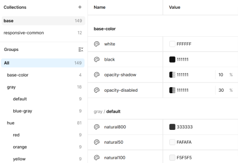
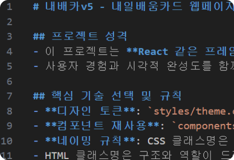
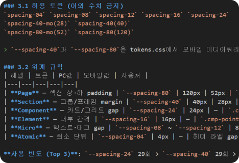
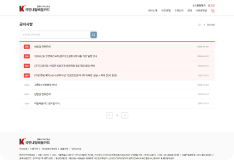
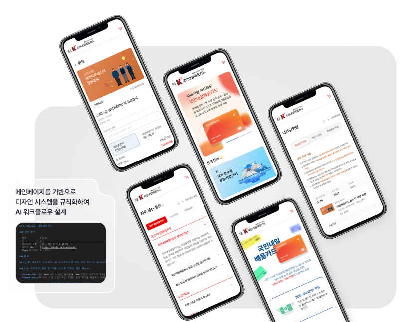
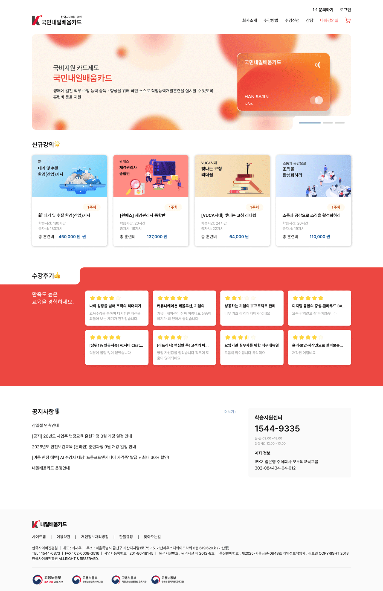
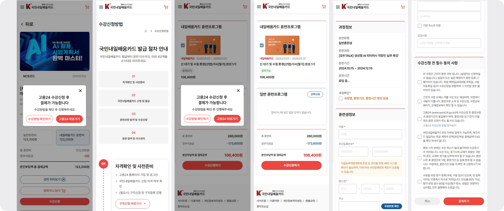

-

Figma Variables
색상·간격·타이포 토큰을 변수로 정의.
-

JSON / MD 규격
AI에게 디자인 시스템과 규칙 주입.
-

AI 규칙서 제작
디자인과 시스템을 바탕으로 AI용 디자인/퍼블리싱 규칙서 제작.
-

검수/수정
디자인/퍼블리싱 자동화 및 검수/수정
내일배움카드
AI 워크플로우 수립과
국비 지원 내일배움카드 UX 최적화
B2C
UI/UX design
AI Workflow
Publishing
디자인 · 개발 · 운영 3인 팀
역할 : Product Design & AI Workflow Lead
AI 기반 UX 로직 및 플로우 설계: 국비 지원 결제 프로세스의 초안 도출.
AI 디자인 & 퍼블리싱 파이프라인: 메인 디자인 및 규칙 수립 후 AI를 사용하여 일관성있는 디자인과 코드 구현.
사용 툴



서비스 확장에 따른 신규 타겟층 목표
- 배경 : 기존 B2B 중심 사업 모델에서 ‘내일배움카드’ 수강 서비스 도입으로 B2C 시장으로 사업 확장.
- 타겟층 변화 : 기존의 4060 세대를 위한 딱딱하고 권위적인 ‘기관형 UI’에서 탈피하여, 자기계발에 즐거움을 찾는 2040 직장인 학습자를 위한 사용자 중심 환경 재정의 필요.
- MZ 직장인의 학습의 즐거움과 편리함을 담은 액티브하고 유연한 비주얼 전략 수립.
자기개발의 즐거움을 담은 액티브하고 친근한 무드
권위형 무드를 벗어나 자기계발의 즐거움을 느낄 수 있도록 부드러운 라운드와 쾌활한 무드를 사용하여
친근한 생활 밀착형 서비스 이미지 구축.

AI를 이용한 사용자 여정 및 결제로직 플로우 설계
자사 사이트와 고용24를 오가는 불연속적인 결제 프로세스의 로직 설계.

사용자 여정
- 결제 스테이트 표기 : 내 강의 카드에 상태값 [결제 대기 / 결제 가능] 배지를 노출하여, 사용자가 현재 상태를 인지할 수 있게 설계.
- 신청방법 및 고용24 안내 모달 : 사용자가 다음 행동을 인지할 수 있도록 결제 버튼 클릭 시 신청방법과 고용24 이동 버튼을 넣은 안내 모달을 보여주어 다음 행동을 제시.
결제 로직 플로우
기획자가 없는 환경에서 AI 결재로직을 설계하여 웹사이트 플로우를 구축하여 개발진행. 개발 방향을 사전에 확정하여 중도 수정을 최소화.
01. 신청
WAITING_SYNC
UI 인터랙션
1. [장바구니버튼 클릭]장바구니 이동 안내 모달
2. [결제버튼클릭]고용24 신청 방법 안내 모달
시스템 로직
강의페이지 [장바구니담기] 버튼 클릭 → 장바구니 데이터 전송
02. 대기
WAITING_SYNC
UI 인터랙션
1. 결제대기 스테이트 표시
2. [결제버튼클릭]고용24 신청 방법 안내 모달
시스템 로직
시스템이 해당 강의의 결제 권한을 비활성 처리
03. 매칭
SYNC_SUCCESS
UI 인터랙션
1. 데이터 업데이트
2. 사용자 화면 변화 없음
시스템 로직
[Admin]관리자가 고용24 리스트 업로드 → 과정(ncs code) 기반 데이터 매핑
04. 활성
SYNC_SUCCESS
UI 인터랙션
1. 결제가능 스테이트 표시
시스템 로직
1. [Trigger]페이지 새로고침 또는 장바구니 재진입 시 상태값 호출
2. 결제 권한을 활성 처리
05. 완료
ENROLLED
UI 인터랙션
1. 나의 강의실 학습 컨텐츠 생성
2. 마이페이지 수강신청내역 생성
시스템 로직
PG사 결제 승인 완료 → DB 상태 전이
Design-to-Code AI 자동화
메인 디자인을 기반으로 Figma Variables을 토큰화하고,
AI에게 JSON/MD 규격을 학습시켜 디자인/퍼블리싱 제작 시간을 단축.
25% 제작공수 단축
디자인 토큰과 AI를 이용해 'Design-to-Code' 파이프라인을 구축, 수동 코딩 대비 제작 공수를 25% 단축.
기획의 공백을 메운 데이터 상태 설계
사용자여정과 결제 로직 플로우를 설계하여 복잡한 외부 기관 연동 프로세스에서 발생할 수 있는 문제를 최소화.
2040 신규 타겟 유입
액티브한 리브랜딩과 결제 로직 최적화를 통해 2040 신규 타겟의 유입 및 안정적 정착에 기여.